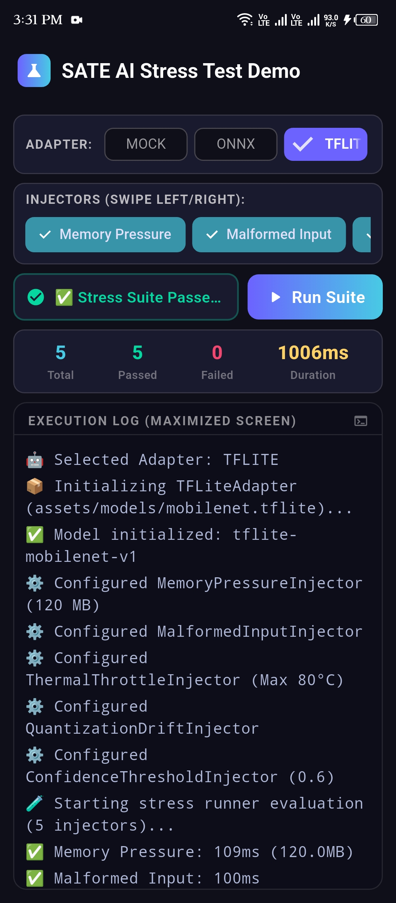

SATE AI Interactive Dashboard
The official cross-platform reference demo application running on Android, iOS, and Web. Demonstrates live fault injection toggles, step-by-step interactive onboarding tutorial, real-time latency graphs, and instant SQLite report exports.
"Running automated stress loops during local CI detected unhandled Out-Of-Memory exceptions on low-tier 2GB RAM test devices before customer release."